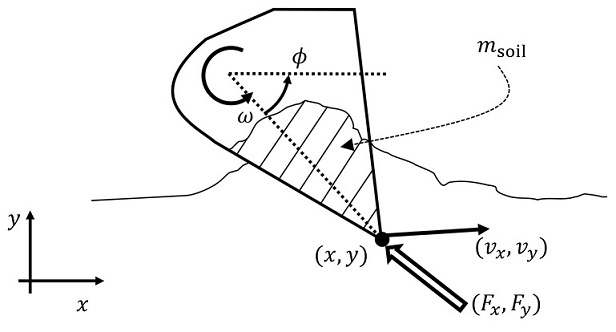

Autonomous Excavation
Skills Demonstrated
I completed my PhD at MIT working under the direction of Professor Harry Asada. My dissertation focused on the application of lifting linearizations and machine learning to automate excavation in remote environments.
Motivation
There is a growing need in the construction and mining industries for excavation automation. Various technologies are being developed for operating excavators autonomously with increased productivity and fuel efficiency. The recent and projected growth of the global construction industry and the dangers of the excavation work environment are major drivers behind the development of intelligent excavators for performing earth-moving tasks.
Excavation is a highly nonlinear process where soil and rocks interact with the bucket of an excavator in a complex manner. While terramechanics models have been studied for many decades, their validity is limited due to the difficulty of identifying the numerous parameters of mechanistic models. Data-driven methods have recently been introduced to autonomous excavation for capturing complex nonlinearities, yet the nonlinear models are still too complex to use, in particular, for real-time control.
Problem Definition

Lifting linearization is a methodology for representing a nonlinear dynamical system with a linear dynamic model in a high-dimensional space. Underpinned by Koopman operator theory, nonlinear systems represented with supernumerary state variables behave more linearly in the lifted space. The method has recently been applied to various robotics and automation challenges, including active learning, soft robotics, human-robot interaction, power systems, and mission planning. More broadly, deep learning has proven a valuable tool for lifting linearization techniques.
The original Koopman Operator has two major limitations:
- The theory is applicable only to dynamical systems with no exogenous input, i.e. autonomous systems, and
- Exact linearization requires an infinite-dimensional space, except for a restricted class of systems.
Any extension to non-autonomous, finite-dimensional systems is no longer exact, but an approximation. Various methods for truncating the system with a finite-dimensional space have been reported. Among others, the eigendecomposition of the lifted system allows us to represent the system at desirable accuracy and granularity while providing useful insights into the system. Furthermore, the extended Dynamic Mode Decomposition (eDMD) is completely data-driven, providing a practical tool for complex nonlinear system representation. These methods, however, need a set of observables, i.e. output variables, which are nonlinear functions of independent state variables. It is still an open question how to find an effective set of observable functions.
One of the key challenges in the lifting linearization of nonlinear systems with exogenous input is causality. If observable functions are functions of both state variables and input variables, we cannot use such observables for lifting the system. Lifting entails computing time derivatives of the observables and, thereby, the dynamic equations inevitably include the time derivative of input. In discrete formulation, this means the use of future input. Including these input terms, the time-evolution of the observables turns out not to be causal. If one measures a set of candidates of observables from a nonlinear system that is subject to control inputs and uses the measured variables for lifting the system, they may end up with a non-causal dynamical system.
In Dual-Faceted Linearization (DFL), another approach to lifting linearization, the causality issue is analyzed based on physical system modeling theory. In DFL, the propagation of inputs across the nonlinear dynamical system can be tracked, and their effect on all observables, called auxiliary variables, can be localized. Assuming that inputs are linearly involved in observables, a method has been established for eliminating the input-dependent component from each observable and lifting the dynamics using the remaining input-free observables. In the Koopman-based lifting linearization, too, it is assumed that the observables are input-affine in order to eliminate input-dependent components from observable functions so a causal dynamic model can be obtained.
Lifting linearization is a powerful methodology for tackling a broad spectrum of nonlinear problems, in particular, excavation process modeling and control. However, two critical challenges have not yet been fully solved:
- Finding an effective set of observables to approximate a nonlinear system in a low-dimensional lifted space
- Finding causal observables uncorrelated with inputs
Solution

My dissertation proposed solutions to these two challenges. I presented a low-dimensional, causal, lifting linear model obtained from experimental data. I used neural networks to find effective observables through learning.
The algorithm worked by collecting experimental data from simulation, filtering the input, then using a neural network to transform the complex soil-excavator dynamics into simple, linear trajectories in a higher-dimensional space. This learned, "lifted" linearization (L3) model can then be used to rapidly predict future interactions. This can enable the excavator's computer to pick an optimal digging path that picks up a maximum amount of soil with each scoop without getting stuck.
I tested my L3 algorithm in a state-of-the-art excavator simulator against several other popular models, beating them all while using less memory. Our results were published in IEEE Robotics and Automation Letters, and we showcased our work at the International Conference on Intelligent Robots and Systems. To learn more about the project, read our journal paper and my dissertation. All of our source code is open source on GitHub.